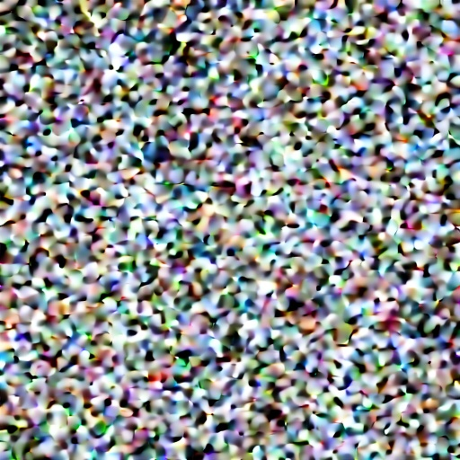
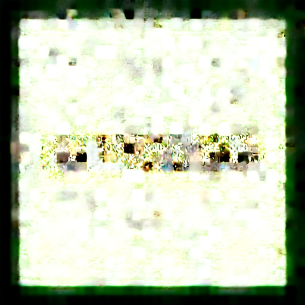
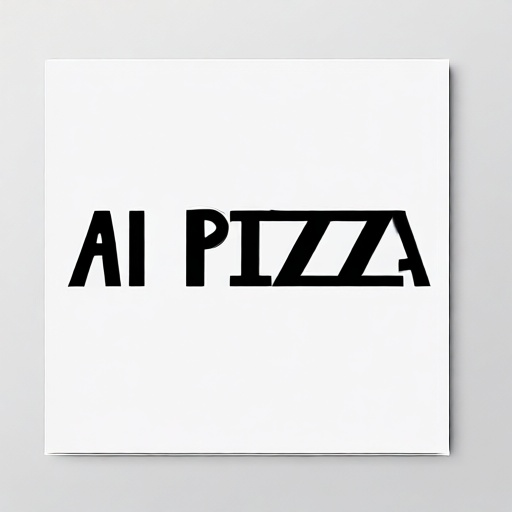
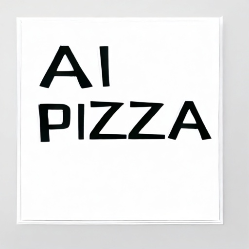
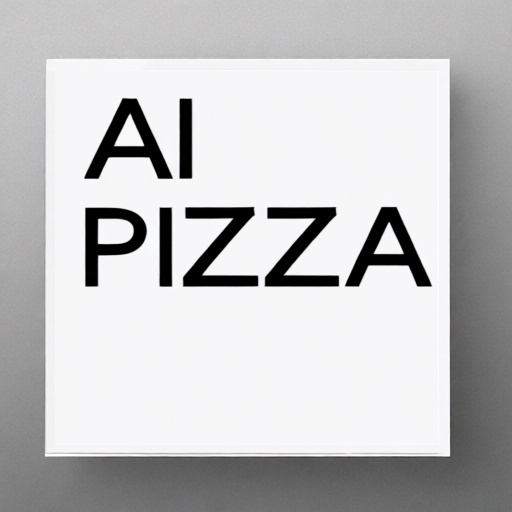
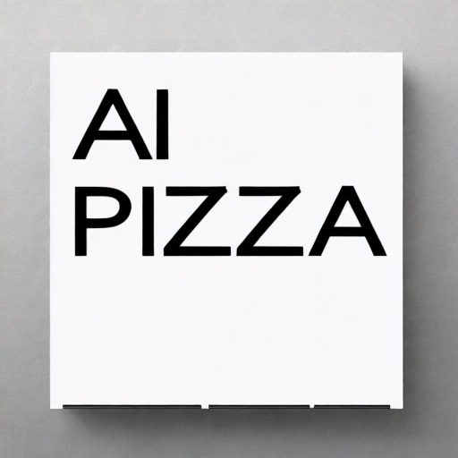
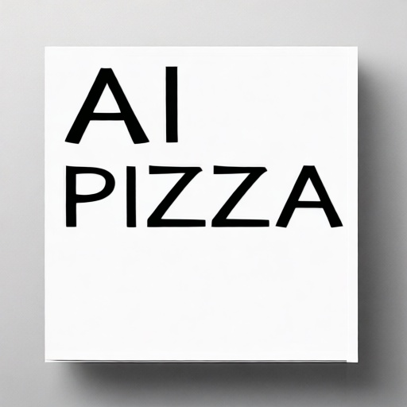
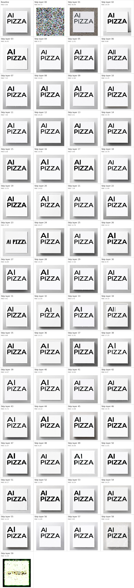

Experiment 07: Layer Ablation Probe
A direct Qwen transformer probe on GPU 1. The script skips one of the 60 transformer blocks at a time, generates the same fixed AI PIZZA prompt, and ranks outputs by pixel difference from the unmodified baseline.
Observed Result
The strongest single skipped layer by pixel MAE is layer 00. The top five most disruptive layers are 00 (MAE 90.72), 59 (MAE 72.59), 01 (MAE 46.99), 37 (MAE 31.91), 23 (MAE 27.45).
Interpretation: layers 00 and 59 are catastrophic trajectory layers in this probe, so they dominate the visual metric. For text-specific follow-up, the more useful candidates are the high-impact non-catastrophic skips where the poster remains but glyph shape, spacing, or layout changes: layers 23, 32, 34, 37, 49, and 51.
This is an ablation ranking, not proof that one layer alone stores text knowledge. Skipping a layer changes the whole denoising trajectory, and the metric is visual pixel delta rather than OCR accuracy. It is still useful for choosing layer bands to inspect or fine-tune next.
Baseline
Prompt: Create a plain white square poster with only the exact text "AI PIZZA" centered in large black clean sans-serif letters. No other text, no logo, no watermark, no decoration.
Most Disruptive Layers

Top Layer Outputs

MAE 90.72, RMSE 112.20

MAE 72.59, RMSE 109.02
MAE 46.99, RMSE 64.78
MAE 31.91, RMSE 52.12

MAE 27.45, RMSE 62.10
MAE 26.45, RMSE 53.76

MAE 26.06, RMSE 49.64
MAE 22.04, RMSE 50.82

MAE 20.28, RMSE 34.68
MAE 20.27, RMSE 41.83
MAE 20.17, RMSE 42.98
MAE 19.59, RMSE 43.38
MAE 19.10, RMSE 35.35

MAE 17.46, RMSE 35.41

MAE 17.25, RMSE 43.76
All Layers Contact Sheet

Metrics
Download CSV for all 60 layer skips
| Skipped Layer | Pixel MAE | Pixel RMSE | Elapsed |
|---|---|---|---|
| 00 | 90.718 | 112.202 | 4.13s |
| 59 | 72.589 | 109.021 | 4.29s |
| 01 | 46.990 | 64.784 | 4.76s |
| 37 | 31.915 | 52.124 | 4.11s |
| 23 | 27.451 | 62.095 | 4.14s |
| 03 | 26.446 | 53.755 | 4.23s |
| 49 | 26.063 | 49.637 | 4.05s |
| 32 | 22.045 | 50.823 | 4.30s |
| 12 | 20.285 | 34.681 | 4.22s |
| 24 | 20.267 | 41.831 | 4.14s |
| 51 | 20.171 | 42.984 | 4.07s |
| 02 | 19.595 | 43.384 | 4.20s |
| 34 | 19.105 | 35.351 | 4.15s |
| 29 | 17.457 | 35.410 | 4.15s |
| 38 | 17.247 | 43.763 | 4.20s |
| 27 | 16.892 | 39.362 | 4.16s |
| 40 | 15.929 | 40.321 | 4.22s |
| 14 | 15.780 | 27.970 | 4.22s |
| 43 | 15.715 | 39.240 | 4.22s |
| 47 | 15.473 | 45.916 | 4.18s |